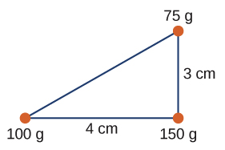
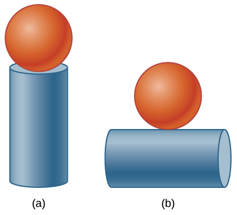
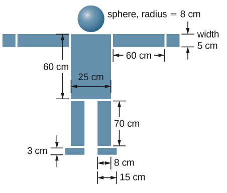

C7.4 Problems#
Problem C7.1
Three point masses are placed at the corners of a triangle as shown in the figure below.

Find the center of mass of the three-mass system.
This problem is a slightly modified version from OpenStax. Access for free here
# DIY Cell
Problem C7.2
Two particles of masses \(m_1\) and \(m_2\) move uniformly in different circles of radii \(R_1\) and \(R_2\) about the origin in the \(x\), \(y\)-plane. The coordinates of the two particles in meters are given as follows (\(z = 0\) for both). Here \(t\) is in seconds:
Find the radii of the circles of motion of both particles.
Find the x- and y-coordinates of the center of mass. Express the solution as a function of time and the two masses.
Decide if the center of mass moves in a circle by plotting its trajectory.
This problem is a slightly modified version from OpenStax. Access for free here
# DIY Cell
Problem C7.3 CM Pseudo Work–Energy vs System Work–Energy#
Two low-friction carts move along a horizontal, frictionless track and stick together in a perfectly inelastic collision. There are no horizontal external forces (ignore air drag).
Cart 1: mass \(m_1 = 1.0~\text{kg}\), initial velocity \(+3.0~\text{m/s}\)
Cart 2: mass \(m_2 = 2.0~\text{kg}\), initial velocity \(-1.0~\text{m/s}\) (toward cart 1)
After the collision, the joined carts move together with speed \(v_f\).
Answer the following:
Compute the center-of-mass velocity \(V_{\text{cm}}\) before the collision. What is \(V_{\text{cm}}\) after the collision?
Using the CM pseudo work–energy theorem \(W_{\text{ext}}^{(\text{cm})}=\Delta K_{\text{cm}}\), find \(\Delta K_{\text{cm}}\) for the collision. Explain briefly.
Compute the total kinetic energy before and after the collision, \(K_{\text{tot},i}\) and \(K_{\text{tot},f}\), and the change \(\Delta K_{\text{tot}}\).
Using the system energy balance \(W_{\text{ext, real}}=\Delta K_{\text{tot}}+\Delta U_{\text{int}}\), determine \(\Delta U_{\text{int}}\) and explain its physical meaning in this scenario.
In one or two sentences, explain why \( \Delta K_{\text{cm}} \ne \Delta K_{\text{tot}} \) in this problem even though \(V_{\text{cm}}\) is constant.
# DIY Cell
Problem C7.4
Find the center of mass of a sphere of mass M and radius R and a cylinder of mass m, radius r, and height h arranged as shown below. Express your answers in a coordinate system that has the origin at the center of the cylinder.

This problem is a slightly modified version from OpenStax. Access for free here
# DIY Cell
Problem C7.5
Find the center of mass of the structure given in the figure below. Assume a uniform thickness of \(20.0\) cm, and a uniform density of \(1.00\) g/cm\(^3\). Assume the structure has vertical symmetry.

This problem is a slightly modified version from OpenStax. Access for free here
# DIY Cell